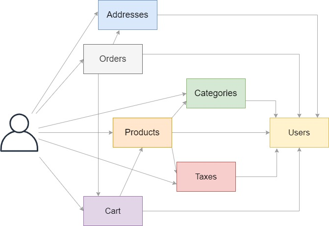
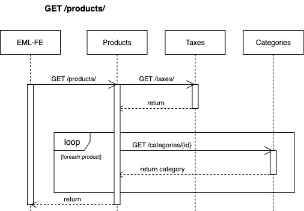
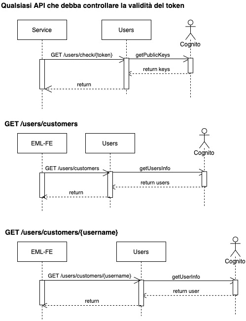
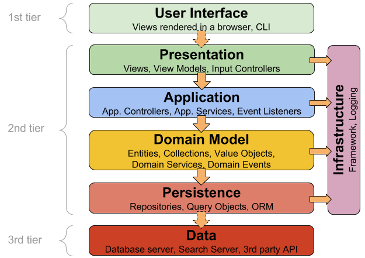
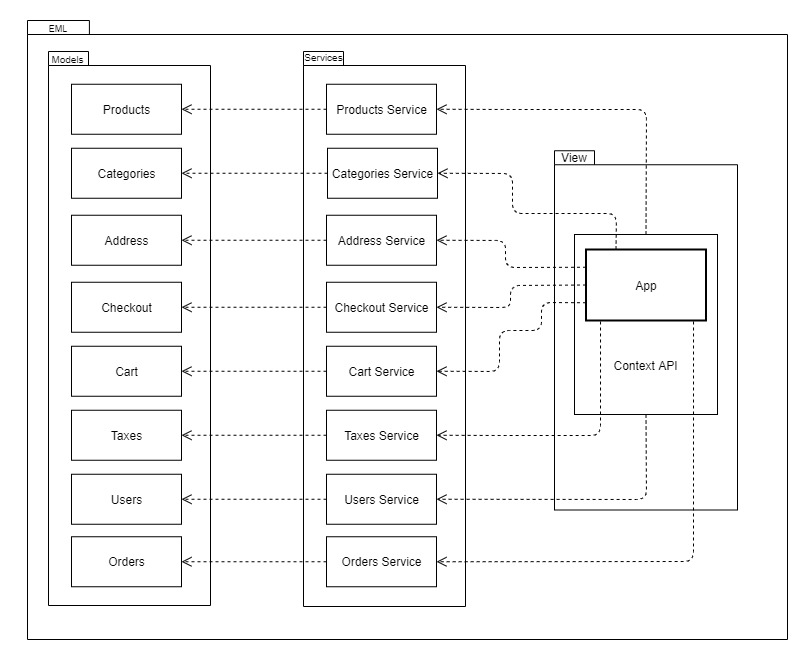

# SWException ### Corso di Ingegneria del Software Università degli Studi di Padova A.A. 2020/2021 Laurea triennale in informatica <em>Product Baseline - 09/04/2021</em> Piattaforma di e-commerce in stile serverless --- # Backend ## Microservizi <!-- Francesco -->  ## Comunicazioni tra microservizi <!-- Michele -->   ## Singolo microservizio <!-- Ivan --> ### Layered architecture  Note: - Presentation: handler, cioè le api. Ritornano una risposta http utilizzando il business Layer - Business: è il "core" del microservizio, dove appunto c'è la logica del microservizio - Persistence: classi che si interfacciano con il database, altri microservizi dal nostro progetto, servizi esterni (es. stripe) Architettura semplice da comprendere ed implementare, ci permette comunque di effettuare test di unità sostituendo p.e. le componenti del persistence layer con dei mock. Questo tipo di architettura è risultata da tutti subito chiara e semplice da applicare, abbiamo evitato di utilizzare architettura esagonale (che abbiamo comunque aprofondito e cercato di usare in un esempio prima di prendere una decisione) in quanto avrebbe portato ad overhead, anche considerando che avevamo già iniziato con un'architettura a layer. --- # OpenAPI <!-- Nicole / Stefano --> <!-- TODO: Bla bla bla --> --- # Frontend <!-- Gianmarco --> <!-- TODO: Bla bla bla --> ### Sviluppato con Nextjs Utilizzate le funzioni build in del framework come: - Static & Dynamic Routing - Static & ServerSide page rendering Note: utilizzo struttura React per divisione cartelle ### Gestione del Global State Redux vs ContexAPI? ### ContextAPI - Funzionalità messa a disposizione da React (>16.8) - No dipendenze verso librerie esterne ### Services Unico punto di contatto tra frontend e backend  --- # Presentazione codice <!-- Slide che anticipa la presentazione di un po' di codice che abbiamo fatto. Marco e Gianmarco --> --- ## Grazie dell'attenzione!